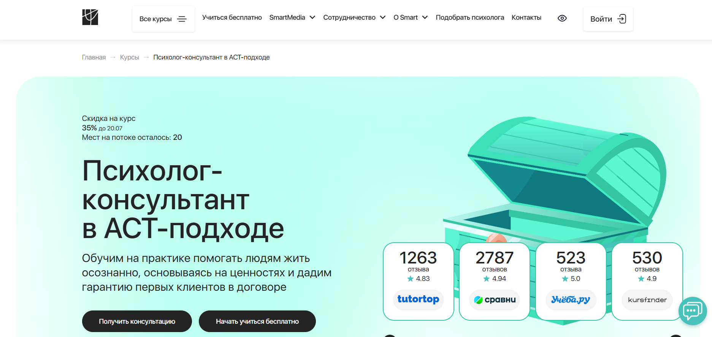
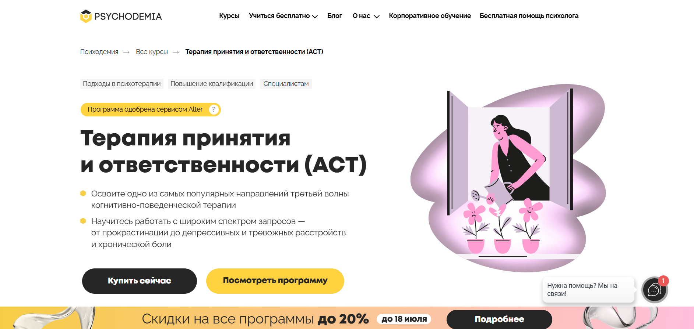
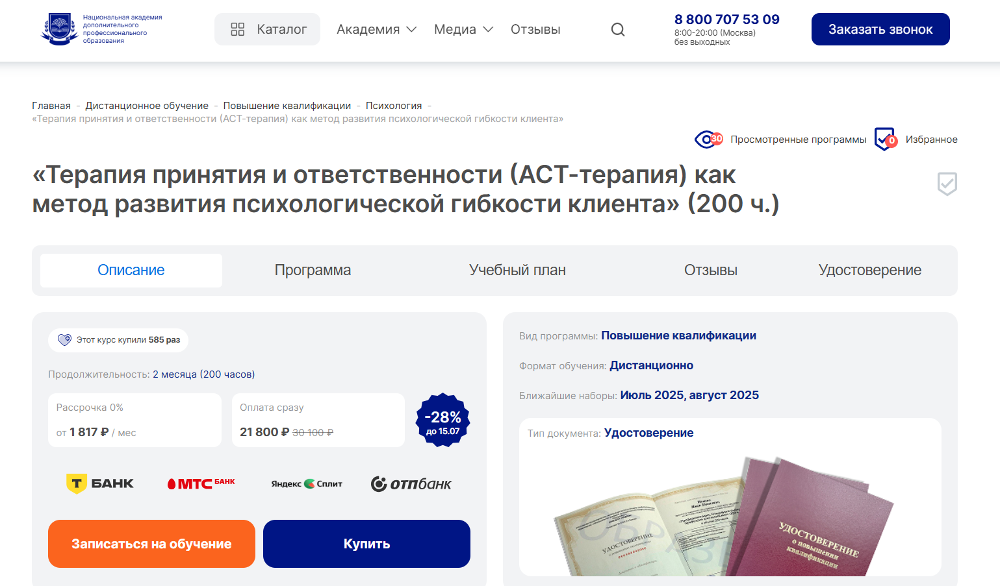
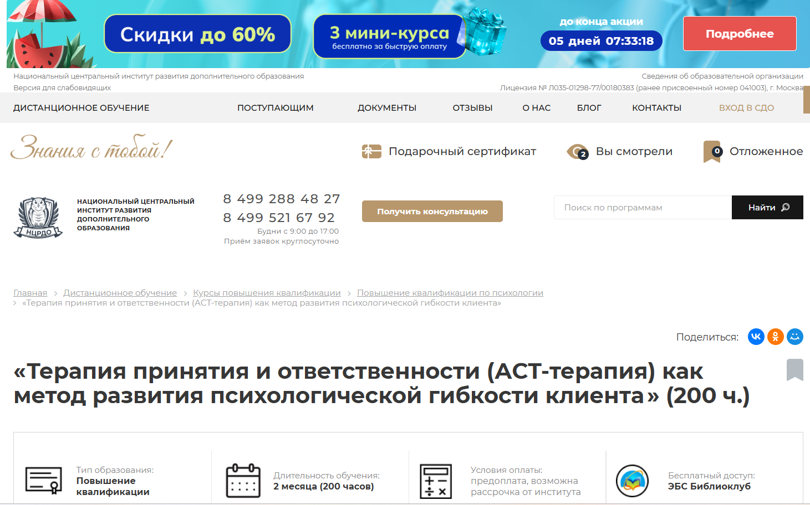
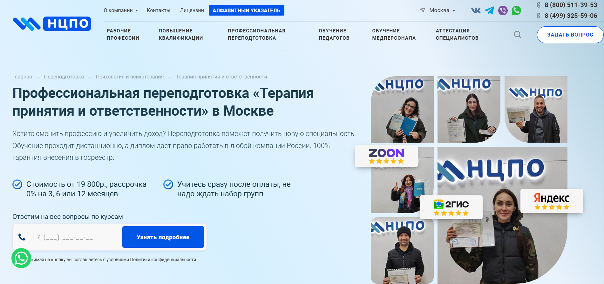

Терапия принятия и ответственности (АСТ) — это современный метод когнитивно-поведенческой терапии, основанный на развитии психологической гибкости и практиках осознанности. АСТ помогает специалистам эффективно работать с тревожными расстройствами, депрессией и эмоциональными переживаниями, используя принципы поведенческой психотерапии. Мы составили рейтинг программ обучения по терапии принятия и ответственности, включающих дистанционные форматы, практические занятия и изучение базовых процессов АСТ. Курсы направлены на развитие профессиональных навыков, освоение методов психотерапии и обучение техникам осознанности, необходимым для работы с реальными клиентами.
Информация обновлена:
ТОП онлайн-курсов по терапии принятия и ответственности (АСТ)
- 🏆 Психолог-консультант в ACT-подходе – Онлайн Институт Smart
- 🏆 Терапия принятия и ответственности (ACT) – Психодемия (по промокоду OnlineKursy действует скидка 🎁 5000 руб)
- 🏆 Терапия принятия и ответственности (АСТ-терапия) как метод развития психологической гибкости клиента – НАДПО (по промокоду onlinekursy действует скидка 🎁 5%)
- Терапия принятия и ответственности (ACT) – МШПП
- Терапия принятия и ответственности (АСТ-терапия) как метод развития психологической гибкости клиента – НЦРДО (по промокоду onlinekursy действует скидка 🎁 5%)
- Терапия принятия и ответственности – Учебный центр «НЦПО»
- Терапия принятием и ответственностью (ACT) — МГУ имени М.В. Ломоносова
Бесплатные курсы по обучению на психолога в АСТ-подходе
- Уникальность подхода ACT – Психодемия
Отличительные преимущества каждой дистанционной программы обучения по терапии принятия и ответственности (АСТ)
| # | Курс и учебное заведение | Отличительные преимущества | Ссылка |
|---|---|---|---|
| 🥇 | Психолог-консультант в ACT-подходе – Онлайн Институт Smart | Гарантированные клиенты по договору, длительная программа (7+ мес), поддержка 24/7, участие в программе SmartMental, вступление в профсообщества | Перейти |
| 🥈 | Терапия принятия и ответственности (ACT) – Психодемия | 60% практики, живые встречи, интервизии, индивидуальный подход, сертифицированный преподаватель с 17+ лет опыта | Перейти |
| 🥉 | Терапия принятия и ответственности (АСТ-терапия) – НАДПО | Низкая цена, кешбэк, доступ к библиотекам, 42 часа практики, помощь HR при трудоустройстве | Перейти |
| 4 | Терапия принятия и ответственности (ACT) – МШПП | Краткосрочный курс (1 месяц), доступная цена, поддержка до 36 мес, участие в клубе выпускников | Перейти |
| 5 | Терапия принятия и ответственности (АСТ-терапия) – НЦРДО | Хорошее соотношение цены и качества, доступ к ЛитРес, 3 попытки на экзамен, преподаватели с 10+ лет стажа | Перейти |
| 6 | Терапия принятия и ответственности – НЦПО | Обучение с нуля, доступ к курсу навсегда, выгодная цена, включение в госреестр, гибкий график 24/7 | Перейти |
| 7 | Терапия принятием и ответственностью (ACT) — МГУ | Престижный диплом от МГУ, международные преподаватели, акцент на трансдиагностический подход и исследования | Перейти |
1. 🏆 Психолог-консультант в ACT-подходе – Онлайн Институт Smart

- ✅ Официальный сайт: smart-inc.ru
- 💸 Цена: от 149 900 ₽ (со скидкой 74 952 ₽ )
- 💳 Рассрочка: от 6246 ₽/месяц на 3, 6, 12 или 24 месяца без переплат
- 📚 Формат: дистанционный формат: видеоуроки, домашние задания, практические упражнения, супервизии, лекции
- ⏳ Продолжительность: от 7 месяцев, 256+ учебных часов
- 📜 Документ: диплом о профессиональной переподготовке, регистрация в ФРДО
- 📝 Трудоустройство: поддержка центра карьеры, первые клиенты по договору, участие в программе SmartMental
- 🔷 Для кого подходит курс: начинающим и практикующим психологам, специалистам помогающих профессий, выпускникам и студентам психологических программ
Особенности:
Курс сочетает когнитивно-поведенческую психотерапию и терапию принятия, что делает его актуальным для психологов, стремящихся освоить современные методы. Благодаря практике на реальных клиентах и обратной связи от менторов, слушатели развивают навыки осознанности и гибкость клиента, необходимые для построения эффективного терапевтического процесса. Обучение проходит в удобном дистанционном формате, доступ к материалам сохраняется навсегда. Студенты получают поддержку 24/7, работают в терапевтических тройках и участвуют в супервизиях, что усиливает практическую подготовку. По окончании курса выдаётся диплом, признанный в РФ, с возможностью вступления в профессиональные сообщества. ACT помогает адаптировать поведенческую терапию к запросам клиентов, направленным на проработку эмоциональных расстройств и депрессии. Основа курса — принципы ACT и когнитивного разделения как эффективных инструментов.
Чему учатся студенты:
- Работать с выгоранием, депрессией, тревожными расстройствами и ПТСР
- Применять когнитивно-поведенческую терапию с использованием принципов ACT
- Развивать психологическую гибкость у клиентов
- Использовать техники осознанности в терапевтической практике
- Отрабатывать практические навыки на клиентских кейсах
- Проводить экспозиционную терапию и арт-интервенции в рамках ACT
- Формировать устойчивую практику консультирования на основе ценностей
Преподаватели:
- Ольга Нестеркина — клинический психолог, коуч РСС ICF, супервизор, наставник, более 10 лет практики
Преимущества:
- Первые реальные клиенты гарантированы договором
- Программа разработана с учетом всех базовых процессов ACT
- Включены супервизии и интенсив по концептуализации
- Возможность получения членства в ОППЛ и АППП
- Психологи-практики сопровождают обучение с первого дня
- Курс адаптирован под любые уровни подготовки — от новичков до действующих терапевтов
- Форматы обучения включают не только теорию, но и реальную терапевтическую практику
- Официальная лицензия и регистрация в системе ФРДО
Отзывы учеников:
Слушатели курса особенно отмечают практико-ориентированный подход, оперативную обратную связь от кураторов и менторов, а также возможность применить знания сразу после окончания обучения. Отдельно выделяют помощь центра карьеры, гибкий формат и поддержку на каждом этапе.
Перейти на официальный сайт курса2. 🏆 Терапия принятия и ответственности (ACT) – Психодемия
- ✅ Официальный сайт: psychodemia.ru
- 💸 Цена: от 95 000 ₽ (со скидками до 20% )
- 💳 Рассрочка: до 18 месяцев, от 5 277 ₽ в месяц
- 📚 Формат: видеолекции, рабочие тетради, практические задания, супервизии, интервизии, живые встречи
- ⏳ Продолжительность: 4,5 месяца
- 📜 Документ: удостоверение о повышении квалификации — 171 ак. час (тариф «Стандарт») или 187 ак. часов (тариф «Эксперт»)
- 📝 Трудоустройство: 3 сессии с реальным клиентом (тариф «Эксперт»), развитие профессиональных навыков и работа с кейсами
- 🔷 Для кого подходит курс: начинающие психологи, студенты, практикующие специалисты, желающие освоить ACT и укрепить навыки поведенческой терапии
Особенности:
Программа основана на современной модели поведенческой психотерапии и направлена на развитие психологической гибкости. Обучение проходит в дистанционном формате и сочетает теорию и практику: 60% занятий — практические модули, включая интервизии и работу с реальными клиентами. Студенты изучают техники осознанности, учатся использовать поведенческий анализ, формулировать запросы и работать с ценностями клиента. Благодаря сильной научной базе и клинической ориентации, программа подходит и для опытных специалистов, и для тех, кто только начинает путь в когнитивно-поведенческой терапии.
Чему учатся студенты:
- Концептуализировать случаи в рамках ACT-модели
- Работать с психологической гибкостью и ценностями клиента
- Использовать гексафлекс, функциональный анализ и другие инструменты ACT
- Проводить сессии, интервизии и супервизии по модели портлендской школы
- Выстраивать терапевтический альянс и этично формулировать соглашения
- Развивать навыки саморефлексии и управления внутренними реакциями
Преподаватели:
- Кристина Пигалова — клинический психолог, ACT- и КПТ-терапевт, супервизор с опытом более 17 лет, преподаватель и член Ассоциации когнитивно-поведенческой психотерапии и ACBS
Преимущества:
- 60% практики: супервизии, интервизии, практика в тройках
- Работа с реальными клиентами под наблюдением опытных преподавателей
- Фокус на развитии психологической гибкости и навыков осознанности
- Актуальные методы когнитивной терапии третьей волны
- Гибкое дистанционное обучение без привязки ко времени
- Поддержка в сообществе выпускников и доступ к закрытым мероприятиям
- Программа одобрена независимым сервисом оценки качества
Отзывы учеников:
Студенты отмечают сильный практический блок, глубокое изучение моделей поведенческой терапии и полезность техник, которые помогают клиентам с тревожными расстройствами и прокрастинацией. Преподавание называют чутким и профессиональным, ценят обратную связь и индивидуальный подход в обучении.
Перейти на официальный сайт курса3. 🏆 Терапия принятия и ответственности (АСТ-терапия) как метод развития психологической гибкости клиента – Национальная академия дополнительного профессионального образования

- ✅ Официальный сайт: nadpo.ru
- 💸 Цена: 21 800 ₽ (со скидкой 28% )
- 💳 Рассрочка: от 1 817 ₽ в месяц, 0% переплаты
- 📚 Формат: дистанционное обучение: видеолекции, домашние задания, тесты, вебинары, воркшопы, доступ 24/7
- ⏳ Продолжительность: 2 месяца (200 часов)
- 📜 Документ: удостоверение о повышении квалификации, вносится в ФИС ФРДО
- 📝 Трудоустройство: помощь от HR-консультантов, предложения от партнёров центра занятости
- 🔷 Для кого подходит курс: практикующим психологам, консультантам и специалистам, желающим развить профессиональные навыки в области поведенческой психотерапии
Особенности:
Курс сфокусирован на обучении навыкам осознанности и методам когнитивно-поведенческой терапии, позволяющим развивать гибкость клиента при работе с эмоциональными трудностями. АСТ-терапия — это современный подход, признанный эффективным инструментом для консультирования при тревожных расстройствах, депрессии, зависимости. Программа сочетает теоретическую основу с практическими занятиями и помогает освоить модели психологической адаптации. Обучение проходит в дистанционном формате, что делает его доступным независимо от географии. После окончания курса выпускники получают удостоверение, подтверждающее их квалификацию в сфере когнитивно-поведенческой психотерапии.
Чему учатся студенты:
- Работать с шестью базовыми процессами АСТ
- Применять методы когнитивного разделения и принятия
- Использовать техники осознанности в работе с клиентом
- Вести сессии по поведенческой терапии
- Монетизировать знания: частная практика, тренинги, онлайн-сессии
Преподаватели:
- Тарасов Сергей Васильевич — кандидат наук, практикующий клинический психолог с опытом более 20 лет, эксперт в области поведенческой психотерапии
Преимущества:
- Входит в ТОП-3 онлайн-школ по соотношению цены и качества
- Обучение по ФГОС, с регистрацией документов в госреестре
- Доступ к библиотекам ЛитРес и БиблиоКлуб
- Программа включает 42 часа практических занятий
- HR-сопровождение: помощь в трудоустройстве
- Кешбэк 1 090 баллов при оплате
- Без выходных и с круглосуточным доступом к материалам
- Общение с преподавателями и другими участниками курса
Отзывы учеников:
Студенты подчеркивают высокий уровень преподавателей, доступность дистанционного формата, полезность практических инструментов АСТ и поддержку при трудоустройстве. Многие отмечают рост профессиональной уверенности после окончания курса и применение полученных знаний на реальных клиентах.
Перейти на официальный сайт курса4. Терапия принятия и ответственности (ACT) – МШПП
- ✅ Официальный сайт: mspp.online
- 💸 Цена обучения: полная стоимость — 50 000 ₽
- 💳 Рассрочка:от 2 090 ₽ в месяц от школы до 36 месяцев или от банков-партнеров
- 📚 Формат: видеолекции, практические задания, супервизии, онлайн-вебинары, обратная связь
- ⏳ Продолжительность: 1 месяц, включая итоговую аттестацию (72 часа)
- 📜 Документ: удостоверение о повышении квалификации установленного образца
- 📝 Трудоустройство: поддержка карьерного центра МШПП, помощь в трудоустройстве
- 🔷 Для кого подходит курс: начинающие психологи, практикующие специалисты, студенты, желающие сменить профессию
Особенности:
Программа фокусируется на когнитивно-поведенческой терапии третьей волны и направлена на развитие психологической гибкости. Поддержка опытных преподавателей, работа с реальными клиентами, освоение техник осознанности, структурирование сессий и принципы ACT делают курс практикоориентированным. Обучение проходит в удобном дистанционном формате на собственной образовательной платформе школы. Курсы включают глубокую теорию и практику ACT с применением современных методов психотерапии. Доступ к онлайн-материалам, занятиям и супервизиям открыт даже после завершения программы.
Чему учатся студенты:
- Применять принципы терапии ACT в работе с клиентами
- Развивать навыки осознанности и гибкость клиента
- Использовать шесть базовых процессов ACT
- Работать с ценностями, избеганием и мотивацией
- Строить эффективные терапевтические сессии
- Применять технику когнитивного разделения
- Внедрять методы психотерапии в онлайн-формате
Преподаватели:
- Более 40 экспертов — действующие психотерапевты и практикующие психологи
- Преподаватели с опытом работы в реальной практике и супервизии
- Топ-кураторы, сертифицированные специалисты ACT
Преимущества:
- Освоение терапевтического подхода ACT за 4 недели
- Применение теоретической и практической базы на реальных клиентах
- Поддержка от преподавателей и кураторов 24/7
- Профессиональная переподготовка и повышение квалификации
- Возможность начать частную практику после окончания курса
- Участие в клубе выпускников и профессиональном сообществе
- Доступ к бонусным модулям: этичное продвижение, онлайн-консультирование
- Подтверждение квалификации документом, действительным по всей РФ
Отзывы учеников:
Студенты часто отмечают высокий уровень преподавания, насыщенную практику и доступность сложных тем. Среди плюсов — структурированная подача, поддержка кураторов, удобная платформа и возможность совмещать обучение с работой. Многие отмечают уверенность, с которой начали консультировать после окончания обучения.
Перейти на официальный сайт курса5. Терапия принятия и ответственности (АСТ-терапия) как метод развития психологической гибкости клиента – Национальный центральный институт развития дополнительного образования

- ✅ Официальный сайт: ncrdo.ru
- 💸 Цена: 24 300 ₽ (со скидкой — 17 600 ₽ )
- 💳 Рассрочка: 1 467 ₽/мес на 12 месяцев
- 📚 Формат: дистанционное обучение с лекциями, вебинарами, практическими заданиями, доступом к библиотеке, тестами, методичками
- ⏳ Продолжительность: 2 месяца / 200 часов
- 📜 Документ: удостоверение о повышении квалификации установленного образца
- 📝 Трудоустройство: HR-консультации и поддержка выпускников, внесение данных в Федеральный реестр
- 🔷 Для кого подходит курс: для психологов, студентов СПО и ВО, специалистов, развивающих профессиональные навыки
Особенности:
Обучение проходит в дистанционном формате, что удобно для совмещения с работой. Программа построена на основе принципов АСТ и когнитивно-поведенческой психотерапии. Упор делается на развитие психологической гибкости и освоение практических навыков. Курс включает изучение моделей и инструментов, направленных на помощь клиентам в преодолении тревожных расстройств, дезадаптивных мыслей и эмоциональных переживаний. Используются методы психотерапии, которые помогают развивать навыки осознанности и работать с внутренними состояниями. Обучение проводится с применением практик осознанности, техник когнитивного разделения и построения поведенческих целей.
Чему учатся студенты:
- Применять инструменты АСТ-терапии в работе с клиентами
- Развивать у клиентов навыки осознанности и гибкость мышления
- Оценивать случаи, ставить поведенческие цели и разрабатывать план терапии
- Использовать методы когнитивной терапии для работы с тревожными расстройствами
- Применять поведенческую терапию для коррекции дезадаптивных реакций
- Работать в интервизионных группах и супервизиях
- Разрабатывать упражнения по выявлению ценностей
Преподаватели:
- Мельникова Елена Васильевна — опыт с 2010 года
- Тышкевич Марина Юрьевна — опыт с 2006 года
- Шевченко Дария Игоревна — опыт с 2018 года
- Салихова Мария Романовна — опыт с 2007 года
Преимущества:
- Обучение проводится на платформе с круглосуточным доступом
- Используются современные методы когнитивно-поведенческой терапии
- Доступ к ЛитРес и Библиоклубу включён в стоимость
- Рассрочка без переплат на 12 месяцев
- 3 попытки на итоговый экзамен и неограниченные попытки на тесты
- Практическое применение знаний сразу после окончания курса
- Сертификаты за просмотр вебинаров
- Данные о документе вносятся в ФИС ФРДО
Отзывы учеников:
Студенты чаще всего отмечают: понятную структуру занятий, высокую квалификацию преподавателей, удобный дистанционный формат, помощь в освоении практических инструментов ACT и возможность сразу применять полученные знания в терапевтической практике. Платформа стабильная, а материалы — легко усваиваемые. Множество положительных отзывов опубликованы в Яндекс (1274 отзыва – 5.0), Google (538 – 4.8), 2GIS (556 – 4.9).
Перейти на официальный сайт курса6. Терапия принятия и ответственности – Учебный центр «НЦПО»

- ✅ Официальный сайт: ncpo.ru
- 💸 Цена: от 19 800 ₽ (скидка 3 000 ₽ при оплате в день оформления)
- 💳 Рассрочка: 0% на 3, 6 или 12 месяцев, от 1 650 ₽ в месяц
- 📚 Формат: дистанционный формат — видеоуроки, тесты, доступ к платформе 24/7, методические материалы
- ⏳ Продолжительность: от 250 до 1600+ академических часов
- 📜 Документ: диплом о профессиональной переподготовке, внесение в госреестр ФРДО
- 📝 Трудоустройство: курс способствует карьерному росту и может быть использован для получения новой должности
- 🔷 Для кого подходит курс: специалисты со средним специальным или высшим образованием, желающие освоить новую специальность или пройти переаттестацию
Особенности:
Курс построен на принципах терапии принятия и ответственности (ACT) и ориентирован на развитие психологической гибкости у специалистов. Программа дает возможность освоить поведенческую терапию и техники осознанности без предварительной подготовки. Обучение проходит дистанционно на современной платформе, позволяя не отрываться от работы. Доступ к материалам сохраняется навсегда. Все документы оформляются официально, обучение проводится по лицензии Минобразования РФ. ACT помогает клиентам находить устойчивость к стрессу и справляться с тревожными расстройствами с помощью когнитивно-поведенческой психотерапии и практических инструментов осознанности. ACT предлагает эффективные методы работы с эмоциями, ценностями и поведением.
Чему учатся студенты:
- Использованию техник когнитивной терапии и методов поведенческой психотерапии
- Применению практик осознанности и когнитивного разделения в терапевтической работе
- Развитию гибкости клиента через инструменты ACT
- Построению эффективного терапевтического процесса и работе с ценностями
- Применению ACT в работе с тревожными расстройствами и депрессией
Преподаватели:
- Терешков Александр Леонидович — генеральный директор УЦ «НЦПО», эксперт в области образования
- Грезнева Диана — преподаватель курса, практикующий специалист в поведенческой психотерапии
- Малкова Анна — преподаватель, специализируется на терапии третьей волны и клинической психологии
Преимущества:
- Обучение проводится официально по лицензии Минобразования
- Доступ к материалам курса навсегда без ограничений
- Выдача диплома установленного образца с внесением в госреестр
- Возможность обучения с нуля без предварительной подготовки
- Гибкий график: обучение доступно 24/7
- Программа включает техники ACT, когнитивной и поведенческой терапии
- Выгодная цена и рассрочка без переплат
- Реальные кейсы и примеры из практики преподавателей
Отзывы учеников:
Слушатели курса чаще всего отмечают удобство дистанционного формата, грамотную подачу материала и поддержку преподавателей. Высоко оценивается практическая направленность и полезность навыков осознанности для работы с клиентами. Положительные оценки в Яндекс (5.0), Google (4.9), 2GIS (5.0) подтверждают качество обучения.
Перейти на официальный сайт курса7. Терапия принятием и ответственностью (ACT) — факультет психологии МГУ имени М.В. Ломоносова
- ✅ Официальный сайт: psymsu.info
- 💸 Цена: 170 000 ₽
- 💳 Рассрочка: не указана
- 📚 Формат: дистанционное обучение, видеолекции, теоретические и практические модули, отработка терапевтических техник
- ⏳ Продолжительность: 250 академических часов (август 2026 — апрель 2026)
- 📜 Документ: диплом о профессиональной переподготовке от МГУ
- 📝 Трудоустройство: развитие профессиональных навыков для практикующих специалистов
- 🔷 Для кого подходит курс: специалисты с психологическим, психиатрическим или психолого-педагогическим образованием, а также студенты старших курсов
Особенности:
Программа дает системное представление о методах поведенческой психотерапии третьей волны, фокусируясь на терапии принятия. Она построена на трансдиагностическом подходе, включающем элементы когнитивно-поведенческой терапии, навыков осознанности и функционального анализа поведения. Особое внимание уделяется развитию гибкости клиента, работе с внутренними переживаниями, а также конкретным клиническим задачам: тревожные расстройства, депрессия, ПТСР, горе, зависимость. ACT помогает специалистам освоить эффективные методы психотерапии, применимые в реальных сессиях с клиентами. Обучение проходит в дистанционном формате, что удобно для практикующих психологов из любых регионов.
Чему учатся студенты:
- Формулировать клинический случай по модели ACT (гексафлекс, матрица, точка выбора)
- Применять техники когнитивного распутывания и принятия в работе с эмоциями
- Использовать практики осознанности в терапевтическом процессе
- Работать с клиентами, переживающими депрессию, тревожные расстройства, утрату и гнев
- Осваивать методы терапевтических метафор и креативной безнадежности
- Адаптировать подход ACT к работе с зависимостями и подростками
Преподаватели:
- Никита Чернов — клинический психолог, член ACBS и The Compassionate Mind Foundation, международный сертифицированный специалист по UP
- Мария Белякова — медицинский психолог, ACT и CBT терапевт, участница международных программ
- Егор Лобусов — врач, невролог, специалист по CBT, ACT, CFT, участник исследований в области нейропсихологии
- Евгения Янке — психолог-консультант, сертифицированный майндфулнесс-тренер, член ACBS и АКПП
- Татьяна Смирнова — клинический психолог, сертифицированный ACT и CFT терапевт, сотрудник Центра контекстуальной поведенческой терапии
Преимущества:
- Актуальная программа на основе более 200 исследований эффективности ACT
- Форматы обучения включают теорию и практику с фокусом на развитие профессиональных навыков
- Углубленная работа с навыками осознанности, креативной безнадежностью и ценностями клиента
- Разбор кейсов и применение инструментов ACT в реальных ситуациях
- Доступ к дистанционному формату без отрыва от основной деятельности
- Обучение проводят специалисты с международной сертификацией и клинической практикой
- Выдача диплома МГУ по окончании курса
- Подходит как для начинающих, так и для опытных практиков
Отзывы учеников:
Слушатели отмечают высокий профессионализм преподавателей и логичную структуру обучения. Особенно ценится возможность освоения практических инструментов ACT и работы с реальными случаями. Многие выделяют глубокую проработку тем осознанности и гибкости мышления, полезную для практики в психотерапии.
Перейти на официальный сайт курса- Мини-курс поможет изучить один из популярных подходов когнитивно-поведенческой терапии – терапию принятия и ответственности.
- Формат обучения — дистанционный, доступ открыт навсегда, что удобно для практикующих специалистов и студентов.
- Курс дает понимание, как ACT помогает работать с тревожными расстройствами и развивать психологическую гибкость.
- Разбираются универсальные процессы ACT и способы их интеграции в поведенческую терапию с реальными клиентами.
- Предусмотрены упражнения на когнитивное разделение и снижение катастрофизации при тревоге.
- Курс сочетает теоретические основы ACT и практические навыки, которые легко адаптировать под разные подходы.
- Обучение проводят сертифицированные преподаватели, включая Дарью Сучилину – единственного официального тренера ACT в России.
- Участники после завершения курса и прохождения теста получают электронный сертификат.
- ACT предлагает гибкий терапевтический подход, который подходит как начинающим, так и опытным психологам.
- Записаться можно после короткой анкеты, количество мест не ограничено.
- Работа с мышлением: психолог помогает клиенту замечать автоматические мысли и не вовлекаться в них.
- Развитие осознанности: обучение навыкам присутствия “здесь и сейчас”.
- Принятие эмоций: человек учится не избегать неприятных чувств, а проживать их безопасным способом.
- Определение личных ценностей: работа с тем, что действительно важно клиенту.
- Формирование нового поведения: выбор действий, которые приближают к осознанной жизни, а не продиктованы страхами.
- Знание основ когнитивно-поведенческой терапии (КПТ).
- Понимание философии функционального контекстуализма и теории реляционных фреймов (RFT).
- Навыки ведения сессий по шести процессам психологической гибкости (дефузия, принятие, осознанность, Я-наблюдающий, ценности, действия).
- Умение работать с метафорами и упражнениями на осознанность.
- Личные навыки саморегуляции и присутствия в моменте.
- Средний доход начинающего специалиста: 60 000–90 000 руб. в месяц.
- Опытные практики и коучи ACT: 120 000–250 000 руб. и выше.
- Онлайн-консультирование: позволяет работать с клиентами по всей стране и за рубежом.
- Шаг 1: Получить высшее образование по психологии или психотерапии.
- Шаг 2: Пройти сертификационные курсы ACT у аккредитованных тренеров (например, через ACBS — Association for Contextual Behavioral Science).
- Шаг 3: Регулярно проходить супервизии и личную терапию.
- Шаг 4: Поддерживать профессиональное развитие: участвовать в конференциях, семинарах, мастер-классах.
- Подходит для работы с широким кругом запросов.
- Совместим с другими методами психотерапии.
- Ориентирован на ценности, а не на устранение “симптомов”.
- Развивает личностную гибкость и эмпатию специалиста.
Бесплатные курсы по обучению на специалиста АСТ-терапии
Уникальность подхода ACT – Психодемия
✅ Официальный сайт: psychodemia.ruОписание и особенности:
Психолог в ACT-подходе: кто это, чем занимается и как им стать
Кто такой психолог в ACT-подходе?
Психолог в ACT-подходе — это специалист, который работает с клиентами на основе терапии принятия и ответственности (Acceptance and Commitment Therapy, ACT). Этот метод относится к третьей волне когнитивно-поведенческой терапии и сочетает элементы осознанности, принятия и ценностно-ориентированного поведения. Главная цель ACT — помочь человеку жить полноценной жизнью, несмотря на трудные эмоции и внутренние переживания.
Что делает психолог в ACT-подходе и чем он занимается?
Основная задача психолога ACT — не избавить клиента от боли, а научить принимать её как часть опыта, не позволяя страданию управлять поведением. Специалист помогает клиенту научиться осознавать свои мысли и чувства, действовать в соответствии со своими ценностями и строить осознанную, наполненную жизнь.
ACT-психолог работает как в индивидуальном, так и в групповом формате. Он помогает при тревоге, депрессии, зависимостях, прокрастинации, психосоматических расстройствах и в кризисных состояниях.
Что должен знать и уметь психолог в ACT-подходе?
ACT требует от специалиста особой глубины личной осознанности и эмпатии. В отличие от традиционного “лечения”, психолог в ACT не борется с симптомами, а обучает клиента внутренней гибкости и принятию.
Востребованность и зарплаты ACT-психологов в России
ACT-подход набирает популярность в России, особенно в крупных городах — Москве, Санкт-Петербурге, Казани, Екатеринбурге. Всё больше клиентов ищут терапевтов, которые работают с принятием и осознанностью, а не только с “избавлением от симптомов”.
Спрос на ACT-психологов растет из-за эффективности метода при хроническом стрессе, тревожных расстройствах и выгорании — проблемах, с которыми сталкивается всё больше людей.
Как стать психологом в ACT-подходе и где учиться?
Чтобы стать ACT-психологом, необходимо получить базовое образование в психологии, а затем пройти специализированное обучение по терапии принятия и ответственности. Многие практики дополнительно изучают смежные методы — КПТ, DBT, схемотерапию, майндфулнесс.
В России ACT-программы можно пройти в частных институтах психотерапии, онлайн-школах и международных организациях. Обучение часто включает практику, супервизию и разбор реальных кейсов.
Преимущества работы в ACT-подходе
ACT-подход отличается гуманистичностью и глубиной. Он помогает не только клиентам, но и самим психологам развивать осознанность и внутреннюю устойчивость.
Перспективы развития профессии
ACT становится одним из самых востребованных направлений в современной психотерапии. В будущем ожидается рост числа сертифицированных специалистов, развитие русскоязычных обучающих программ и повышение статуса ACT как научно обоснованного подхода.
Психолог в ACT-подходе — это не просто консультант, а проводник к осознанной и ценной жизни. Этот специалист помогает клиенту не убегать от трудностей, а принимать их как часть человеческого опыта и двигаться вперёд к своим ценностям.
Что такое терапия принятия и ответственности (ACT)?
Терапия принятия и ответственности (ACT) — это современный терапевтический подход, относящийся к направлению когнитивно-поведенческой терапии. ACT помогает клиентам развивать психологическую гибкость, научиться принимать внутренние переживания и действовать в соответствии с ценностями. Принципы ACT основаны на идеях осознанности и ответственного поведения, направленных на улучшение качества жизни клиента.
Какие принципы терапии лежат в основе ACT?
ACT опирается на основные принципы терапии: принятие, когнитивное разделение, контакт с настоящим моментом, Я-наблюдатель, ценности и целенаправленные действия. Эти базовые процессы ACT способствуют развитию психологической гибкости и гибкости клиента в условиях стресса и эмоциональных расстройств.
Кому подойдёт обучение терапии принятия и ответственности?
Проходить обучение ACT могут психологи, психотерапевты, клинические психологи и студенты старших курсов профильных направлений. Также обучение проходит специалисты в сфере психологической помощи, желающие освоить современные методы психотерапии.
Какие форматы обучения ACT доступны?
Обучение ACT проводится в дистанционном формате, очно или в смешанном виде. Дистанционные курсы особенно удобны для специалистов из регионов. Форматы обучения включают вебинары, практические занятия, лекции и работу на реальных клиентах.
Чем ACT отличается от классической когнитивно-поведенческой терапии?
Хотя ACT входит в третью волну когнитивно-поведенческой терапии, она делает акцент на осознанности и принятии, а не на изменении содержания мыслей. ACT предлагает использовать техники осознанности и ценностно-ориентированное поведение как эффективный инструмент терапии.
Что включает в себя программа обучения по терапии принятии ответственности?
Программа включает теоретические материалы по принципам ACT, изучение базовых процессов, практические упражнения, работу с кейсами и навыки осознанности. Также предусмотрено изучение методов психотерапии и применение их в терапевтической практике.
Что даёт прохождение курса ACT?
После завершения курса слушатель получает удостоверение или диплом о повышении квалификации. Курсы помогают научиться применять принципы ACT, проводить терапевтические сессии и помогать клиентам справляться с эмоциональными трудностями.
Какие навыки развивает обучение?
Участники курса развивают навыки осознанности, психологическую гибкость, практические навыки работы с ценностями и ответственным поведением. Обучение направлено на развитие профессиональных навыков в рамках когнитивно-поведенческой психотерапии.
Как ACT помогает клиентам?
ACT помогает клиентам научиться принимать свои мысли и эмоции, не избегая их, и направлять поведение в сторону личностных ценностей. Такой терапевтический процесс способствует гибкости клиента в повседневной жизни и устойчивости к стрессу.
Какие темы изучаются на базовых курсах по терапии принятии ответственности?
Базовые курсы ACT охватывают основы АСТ, базовые процессы АСТ, когнитивное разделение, работу с ценностями, практики осознанности, а также техники поведенческой терапии.
Можно ли пройти обучение ACT онлайн?
Да, дистанционное обучение ACT — это удобный формат, который позволяет освоить современные подходы и получить практические инструменты без отрыва от работы. Образовательные платформы предлагают курсы повышения квалификации с доступом к учебным материалам.
Какие техники используются в терапии принятии ответственности?
ACT использует техники осознанности, когнитивное разделение, экспозиционную терапию, упражнения на осознание ценностей и навыки принятия. Все они направлены на развитие психологической гибкости клиента.
Кто проводит обучение по ACT-терапии?
Проводят обучение опытные специалисты в области когнитивно-поведенческой психотерапии и ACT-терапии. Занятия проходят в сопровождении опытных преподавателей с клинической практикой, включая работу с реальными клиентами.
Нужен ли опыт работы для начала обучения?
Обучение слушателям доступно как с опытом, так и без него. Однако базовое психологическое образование желательно, особенно при прохождении программ повышения квалификации и профессиональной переподготовки.
Какие документы получает слушатель после завершения обучения?
После завершения обучения участники получают удостоверения о повышении квалификации, сертификаты или дипломы установленного образца. Эти документы подтверждают освоение учебной программы и профессиональных навыков.
Сколько длится обучение по терапии принятии ответственности?
Продолжительность обучения зависит от формата. Дистанционные курсы могут длиться от 2 до 6 месяцев. Очные программы чаще проходят в формате интенсивов или модулей.
Где проходят практические занятия?
Практическое занятие может проходить в учебных группах, онлайн или на реальных клиентах под супервизией. Практика осознанности занимает важное место в курсе и отрабатывается в рамках терапевтических сессий.
Можно ли применять ACT-терапию при тревожных расстройствах?
Да, ACT помогает при работе с тревожными расстройствами, депрессией, зависимостями, хронической болью и другими эмоциональными расстройствами. Это эффективный метод, признанный в международной практике.
Какие преимущества у обучения по терапии принятии ответственности?
Обучение ACT позволяет развивать гибкость, осваивать современные методы психотерапии, применять инструменты ACT в реальной работе, помогать клиенту достигать поведенческих целей и осознавать личностные ценности.
------------------------------------------------
Реклама. Информация о рекламодателе по ссылкам в статье.